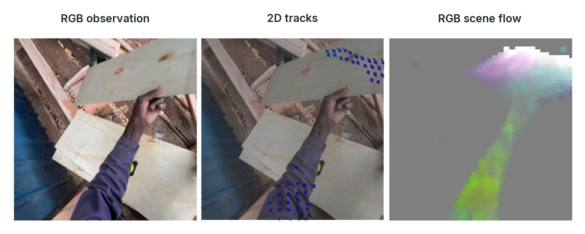
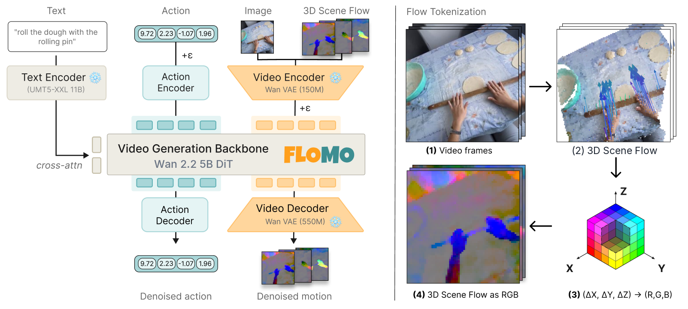
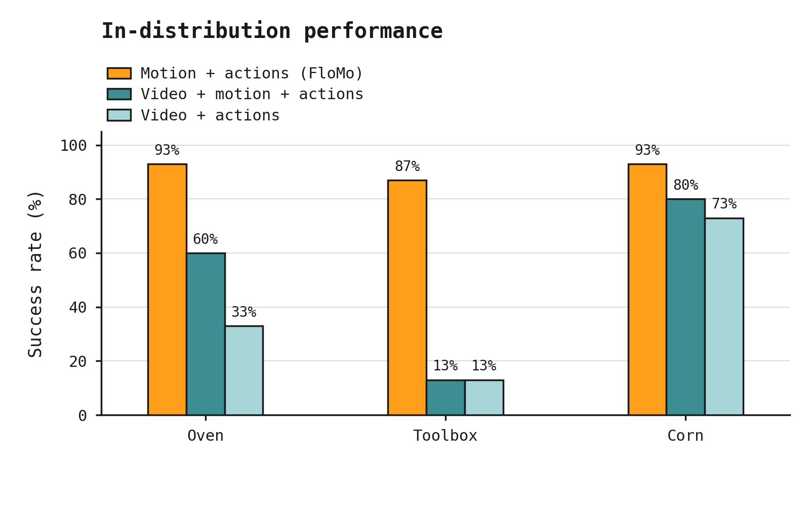
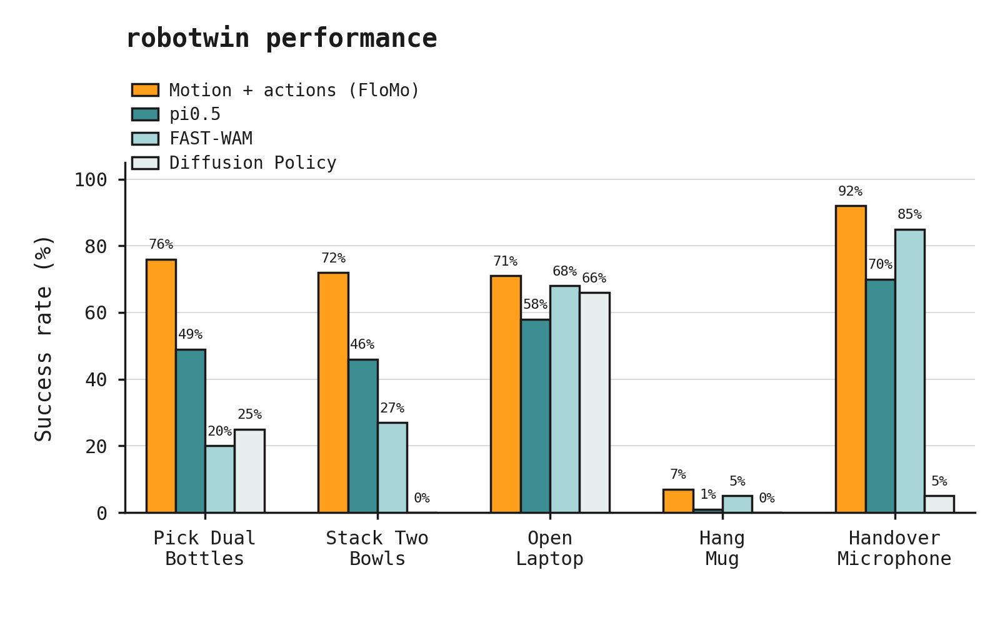
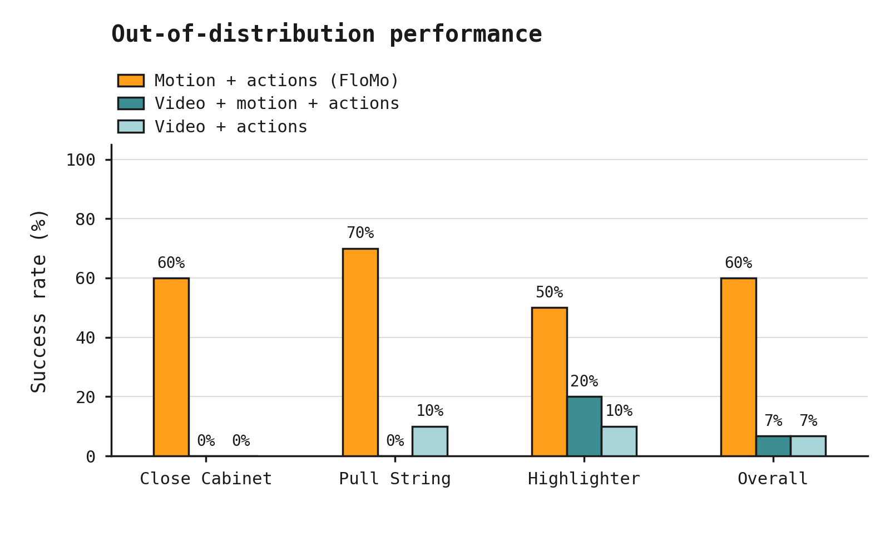
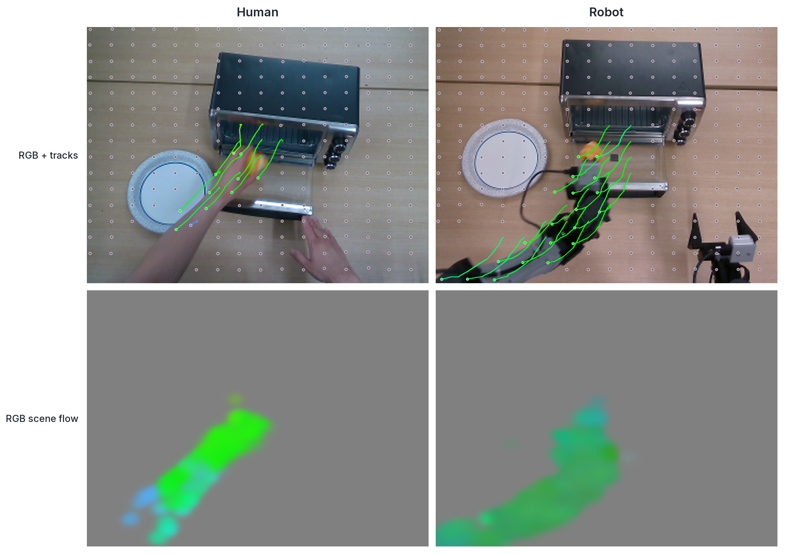
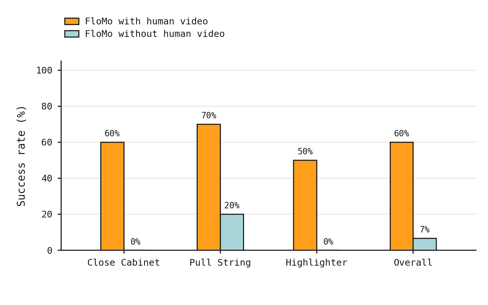

1 / 7
[1/7] Are videos the right objective for World Action Models?
Introducing FloMo: a world action model that uses 3D motion as the link between video pretraining and robot control. It jointly predicts scene flow and robot actions.
Collaborator review · Not published to X
3D Scene Flow as a World Action Model Intermediate for Learning from Human Video
Collaborator handles and arXiv link remain to fill in post 7.






